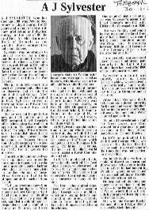
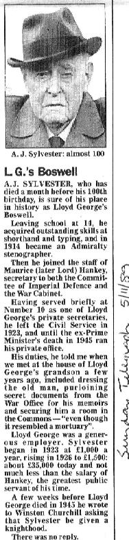

|
<#890505#> |
Pilgrimage to Iberia10.19am. We are in the departure lounge at Gatwick waiting for Dan Air Flight No. 683 to arrive. We were here before 9.00am and met up with Santiago Dominguez a few minutes ago at a different check-in from the one where we had been waiting. Helene is accompanying us on this Pilgrimage, and there are 16 or [including ourselves] 18 of us altogether, including Fr John Dutton, who has stepped in at the last minute for Fr Gabriel, who is unable to come. [The others are May McLoughlin, Joseph Lee, Ray Young, Catherine McParlan, Ralph & Noelline Rosayro, Peter Maguna, Mary Arthur, Franck Bonneres, James & Nora Balfe, Joan Supple and Felicia D’Lima.] We had so much to do last night and did not get to bed until around 12.30am or later. I slept soundly, wakened on the stroke of 3.00am and after loading the car up, and setting Badger’s food out for the next night, also putting out two more [vine-]weevils, we left Summerlands at 3.50am. We know the route to Gatwick off by heart but got a map from the AA in any case. However, Freda put it in the bag we are carrying with us, and could not undo the zip again. Helene did it almost instantly when we were halfway through our journey. 9.43pm (10.43 here in Spain). We are spending the night here in an hotel at Avila; we have a view of the old walled city, familiar to us from the 1961 film El Cid, from our room. It has been a long day and I am almost falling asleep. Our flight did not leave until about 12.35pm, 70 minutes late. We landed at 2.20pm at Madrid. [I took a photo of Freda and Santiago — slide 11915.] On arrival here we drove straight to the Convent of La Encarnacion, where Fr John celebrated Mass. We were so late that the sisters had given us up. Then there was no Bible and no Mass books. Someone produced a New Testament, which however was not used. Mass was said in English, Spanish and Latin. Afterwards we returned to the hotel for dinner, where the 17 of us sat together at a long table. The meal was fish soup followed by stewed meat! and ice cream to finish. We three vegetarians had a tomato juice with half a lemon, followed by an omelette. |
St Teresa of Avila10.33pm BST (and same time here). We are at Fatima in Portugal staying at a religious house, where we arrived a little over an hour ago. We have just enjoyed one of the very nicest meals we have had overseas: vegetable soup, rice salad with cheese, and a generous helping of crème caramel to finish with. Now we have come to bed, tired after a journey of some hundreds of miles from Avila, where we spent the morning at the Carmelite Convent. We visited the museum, saw the cell where St Teresa talked with St John of the Cross, and the staircase where Teresa met Jesus. He asked her, “Who are you?” She said, “I am Teresa of Jesus; who are you?” He replied, “I am Jesus of Teresa.” |
Fatima9.28pm. We have had a marvellous day. Breakfast of rolls and butter and apricot jam at 8.15am. The place where we are staying is a Dominican convent and is the best “hotel” we have ever stayed in. At 10.00am Fr John led us in Mass in the Convent chapel; yesterday we celebrated Mass at the Convent of the Incarnation at Avila, and Friday night also at the Convent but in the main chapel. Thursday night we were at Mass in St John’s [Glastonbury]. The theme at each was the Ascension; in Spain and Portugal the feast is celebrated today instead of Thursday. After Mass we walked through the crowded streets to the Cova da Iria and the great basilica where many thousands were gathered in the open air for the 11.00am Mass. Afterwards the statue of Our Lady of Fatima was carried in procession, the people waving white handkerchiefs as she passed by. Bringing up the rear of the procession was the choir of men looking very smart in dinner suits and black bow ties. We had lunch in our room (No. 05 in the basement) at 1.00pm. Freda made us a cheese roll, and we had half a Boots’ bar plus a slice of Battenburg cake and half an apple, and we had two cups of tea (we brought the teapot and element with us). At 2.00pm we set out on a walk which we shall remember all our days, the way Lucia, Jacinta and Francisco brought their sheep. The way is paved now, but otherwise much as it must have been in 1916 when the Angel appeared to the children, and the place where the Virgin Mary appeared to them on 19th August 1917. We saw holm oaks and olive trees, and wild flowers in abundance, and along the way we prayed all 15 decades of the Rosary (as we did yesterday in the coach). The path took us to Aljustral, where we visited Lucia’s house, and then the house, virtually unchanged, where Francisco was born. Santiago introduced me to Francisco’s younger brother Jara Joas, and I shook hands with him. After this we walked back to the convent for a few minutes’ rest before setting off again for the basilica for the procession of the Blessed Sacrament, which took 45 minutes and which I tape-recorded. It was quite cold in the square and we had some drops of rain. We had dinner at 7.30pm — cauliflower soup followed by soup and omelette and then a slice of cake. We sit at the same table each time, Helene and Freda and me, and Franck Bonneres, who has been in Brazil. He is a very nice person. We got to know each other last night over dinner when we found out that he used to live in Edgbaston, and worked at Metro-Cammell at Saltley. That is where Dad’s brother Fred worked at the same time that they were building the royal train for the King and Queen’s visit to South Africa in 1946. It is also where Arthur Orr worked, and Franck said he knew Arthur well, and Heather. He had been to Hong Kong with him! As we always say, it is a small world! After dinner we looked in the convent shop but did not buy anything as we have not yet bought any Portuguese money. After that we went for a short walk. Another person we met today was Bro. Bonifacio, a resident here who knows Joan (Cassetes) Rodrigues very well. He told us about two other apparitions of Our Lady to people in this area long before the events of 1916–17. I did not complete yesterday’s notes. Our flight was over an hour late on Friday and the bus which had come for us had gone away again, so we were delayed a further hour, during which Santiago paid for us to have a cup of coffee in the airport restaurant. We were thus two hours late in leaving Madrid, and our look around the convent at Avila had to be postponed until yesterday [Saturday] morning, when we should have been on the road to Fatima. In the convent bookshop we bought a guide book, also little pictures of St Teresa (with her autograph) and St John of the Cross. |
Jacinta and Francisco Marto11.30pm. Our stay here is nearly at an end, but we shall never forget these wonderful days in Fatima. Breakfast this morning at 8.00am, then we went to the bank to change £15 for some Portuguese money, after which we went shopping and bought rolls etc. for our lunch. At 10.00am with the rest of our party we set off for the Chapel of the Apparitions — the Cova da Iria — for Mass; afterwards a visit to the basilica, where we sat through the first 20–25 minutes of Mass there before going to see the tombs of Jacinta and Francisco. [Francisco, born on Thursday 11th June 1908, died of influenza on Friday 4th April 1919 aged 10; Jacinta, born Friday 11th March 1910, died also of influenza on Friday 20th February 1920 aged 9. When in 1935 Jacinta’s body was removed from its vault for reburial at Fatima alongside her brother, it was found to be incorrupt, and was still so in 1951.] We had lunch in our room, then at 2.00pm we left for a walk to Aljustral, the same as yesterday, but doing the Stations of the Cross as well as saying the Rosary, an idyllic scene with the sunshine and masses of wild flowers, and the air laden with perfume. Skylarks singing and butterflies flitting across our path. Archangel Michael did not have far to come. I took more photographs [slides] and wrote additional material for the book [Mary Our Mother, unpublished, but see online]. After finishing the Stations the others went on ahead while Freda, Helene and I hung back, savouring every moment. We caught the others up as we got to the village, and Franck treated us all to drinks. I had a lemonade but Freda did not want anything. We visited Francisco and Jacinta’s house again and bought a few cards, and paid a further visit to Lucy’s parents’ home, recently renovated. Finally we rode back to the convent in the bus which had come for us, arriving a minute or two before six, so we said the Angelus as we had done earlier at midday when we were exactly halfway across the square. A lady brought her newly purchased statue of Our Lady of Fatima for Fr John to bless, which he did, laying his hands upon it and making the sign of the Cross over it. I forgot to record that after saying the Angelus at midday and crossing the square we spent a few minutes visiting the Blessed Sacrament on the altar of a little chapel. After dinner this evening we bought a few more cards from the convent shop, then at 8.00pm we all went off to the Chapel of the Apparitions for an international Rosary and torchlight procession, with Our Lady of Fatima bringing up the rear, borne by Santiago and three others. We have had delightful fellowship here, both with members of our party and also Bro. Bonifacio, Santiago’s friend here, and Sister Mary of the Angels. Franck made us laugh at breakfast this morning. He had been kept awake last night by a barking dog and got up to investigate, was wandering about in the church when he was startled out of his wits by a voice asking “Por Favor?” It was the convent’s talking parrot, grey with red tailfeathers and very friendly. Highly intelligent too, and able to tell different nationalities, as he said to me yesterday in the clearest English, “Hello,” and then, “How are you?” [slide 11938] |
Valladolid11.21pm BST. We are back in Spain, at Valladolid, spending the night at the Olive [indecipherable] Hotel in the centre of the city, where we arrived just over three hours ago at 9.19pm. Spain is an hour ahead of Portugal. We left Fatima at 8.55am and drove here via Coimbra where we had Mass at the Carmelite Convent where Sister Lucia is a nun. She has been there since 1948 and is now 82. [Lucia de Jesus dos Santos was born on Friday 22nd March 1907; Francisco and Jacinta were her younger cousins. An angel appeared to the three children in the spring of 1916 when they were 9, 7 and 6, and the Virgin Mary appeared to them on Sunday 13th May 1917 and on the 13th of the next five months.] On the way here we drove through the university town of Salamanca and saw a lot of students. We ate our lunch en route and later stopped at a service station on the motorway, where we had coffee and cake. |
Garabandal9.51pm BST. We are at Garabandal. There was no accommodation for us, as a party of 50+ Hungarians has booked into the village for the night. While we ate a lovely meal at the restaurant, Santiago was going around the village finding accommodation for us all. Incredibly we are staying with Adèle Bertrand at what was to become the Priest’s house, and it was in this very house where some of the marvellous apparitions of Our Lady took place. Amazing too that when Adèle opened the front door to us, the first thing I noticed was Sai Baba’s Shroud picture of Jesus on the wall facing us. We have had another marvellous day. Breakfast, buffet style, in the hotel at Valladolid at 8.00am (I had a bath first), and Mass, then at 9.30am we got in our coach to drive a short distance to the English College of St Alban with its wonderful history and the very moving statue of Our Lady Vulnerata. We celebrated Mass in the chapel, and Fr Jeremy [ ], who comes from Bristol and whose brother lives on the Actis estate at Glastonbury, gave us a talk on the history of the college. Then the drive northwards to the Cantabrian mountains with the Peaks of Europe to our left, and breathtaking scenery as we ascended and then descended the winding road, clinging to the mountainside with precipitous drops of hundreds of feet, and our Rosary devotions said with that extra fervour as we prayed that the brakes would not fail. Then the descent to Corsio and the climb up again, a distance of 5.3 kilometres to this small village. A visit then to the “English house” of Maureen Holt where we are to stay tomorrow night, DV. Everyone congregated there for a cup of tea, and who should come to greet us but Nadège Baco, whom we visited at Wolverhampton last year. Nadège took us on a tour of the little village. We saw Conchita’s mother (and on our arrival we had seen Maria Cruz’s mother) and we stood on the spot where Archangel Michael gave Holy Communion to Conchita and the host materialised on her tongue. It is wonderful that at last we have come here. |
|
10.45pm (11.45 here in Spain). The 18th anniversary of our move to Summerlands, another extraordinary day. We spent last night at Adèle’s in bunk beds, Freda above me. We were very warm, so in the middle of the night Freda asked me to open the little window and I could see the stars. We had toast for breakfast, Joan Supple from Australia and Helene joining us. We had all slept there. After breakfast we sat outside enjoying the warm sunshine and looking at Adèle’s photograph album of the events of 1961–65. [Slide 12010] At 11.00am we had Mass at the church. There was tension between Santiago and Fr John. Santiago is a young convert (4 years) full of self-importance and with his own ideas of how he wants everything done. Still we had a good Mass and Fr John gave a splendid address. We had lunch at the restaurant: Freda, Helene, Nadège, Santiago and I. Before lunch we had moved into “The English House” where we shall be for the rest of our stay here. After lunch we went to see Nadège’s place here, the upstairs part of it (we saw downstairs yesterday), and continued our conversation from lunchtime. Then we met with the rest of the party and Santiago gave us a guided tour up the Calleja, where Archangel Michael came and then the Virgin Mary, to the Pines, where some of the apparitions took place and where a visible miracle is prophesied to happen, leaving a peculiar sign. The weather was cool and damp. We had a cup of tea here after returning from the Pines, then the two of us went for a little walk by ourselves but turned back as thunder echoed round the mountains. After we got back I did a little reading of Garabandal — the Village Speaks, lent me by Adèle, after which I fell asleep. When I awoke it was raining steadily. We had dinner in the restaurant; no Nadège this time but we were joined by Maureen Holt, who runs the house where we are staying, although only temporarily, as she lives in Wiltshire and is specially interested in Stonehenge. She seemed very anxious to talk, especially on how to reconcile spirituality and sexuality. Santiago took himself off and so the four of us had a very good conversation. Maureen is a Catholic but is obviously keenly interested in spiritual truth in its widest context. (Others in the party too. Joseph Lee asked if we knew anything about Wellesley Tudor-Pole, and Franck also asked about Geoffrey Ashe, as did Maureen tonight.) We returned “home” briefly but could not get in until Maureen came and took the key from under a stone where it was secreted. Then at 8.00pm or a few minutes after, we went to the church for the villagers’ nightly Rosary. A remarkably powerful experience this. Afterwards we came back here for a slide show attended by all the party, plus two young Australian girls, Jacinta and Teresa, who had just arrived when we had got back earlier and had to wait to get in. |
|
9.35pm BST (10.35 here). It has rained nearly all day. We have just come up to bed, where I am writing this. Earlier this evening we went to the Rosary, which has been held in the church every evening from time immemorial. I taped it tonight. Before that we had supper at the restaurant: Santiago, Maureen, Pascal (a young Frenchman) and another young man, Helene, Freda and I. We had breakfast here, boiled egg and toast, and went to Mass, at which I read the N.T. lesson and responsorial psalm. Afterwards we came back here for a cup of coffee, then we went for a walk, Helene accompanying us. For lunch we were joined at the restaurant by Santiago, Adèle and her daughter Maria-Lou. At 3.00pm we were to have done the Stations of the Cross at the Calleja [the steep, winding, rocky path leading to the Pines], but it was raining steadily so we had it in the church instead, led by Fr John. Afterwards Santiago led us in the Sorrowful Mysteries. We returned to the house for a few minutes then went to Adèle’s at 5.00pm, where she told us about her knowledge of the happenings here. Fr John came, also May McLoughlin, Nora Balfe and the two Australian girls Jacinta and Teresa, also Nadège. I taped the first 90 minutes; afterwards the discussion continued for at least another half-hour. There were strong feelings expressed by several folk, including the Australian girls, in support of Archbishop Léfèbre, who was excommunicated a little while ago. |
|
10.38pm. Our stay at Garabandal is almost at an end: we leave here tomorrow morning. We had a little sunshine this morning but then the cloud came down. We did the Stations of the Cross up [the Calleja] to the Pines this afternoon, followed by the Glorious Mysteries, and I got so chilled that I have not yet been able to get warm. I am writing this in bed. We went to Mass as usual this morning at 10.00am. The Spanish priest Fr Don Jau came, as it was for the villagers, so the service was in Spanish, but Fr John read the lessons in English. After Mass we went to the cemetery, where we prayed, and Santiago pointed out the graves of several prominent people. We had lunch in the restaurant then went back to our house and went to bed for an hour before setting off with the others to do the Stations of the Cross and Rosary. It was very cold and bleak. I took some photographs [slides 12021–27]. On the way back we went to Ceferino’s and bought four postcards, then we called for Conchita’s mother. [Ceferino is Loli Mazon’s father.] At 7.00pm all of us met for a meal together at the restaurant as we had done on the first night. Afterwards we went to Rosary at the church, led by Maximina Gonzales, Conchita’s aunt, after which we went to Maximina’s, where she had a few relics for sale. I kissed a crucifix which had been kissed by the Virgin Mary. |
Burgos10.10pm BST (11.10 here). We are spending the night in the Hotel Miranda at Burgos, the ancient capital of Castile and burial place of El Cid. It was a beautiful day at Garabandal; we would have preferred to stay there an extra day instead of coming here, but I guess the journey to Madrid was too far to travel in one day. We got our own breakfast — bread and jam and tea — this morning, as Maureen wasn’t up. We went to Mass at 9am, at which Fr John gave an excellent talk, then we carried all the suitcases from our house to the “square” [plaza] to await the arrival of the coach. It was a larger one than we had had before, and we had a different driver. Maureen came to see us off, also Nadège and the Australian girls Jacinta and Teresa, who were staying on until tomorrow. We left Garabandal at 10.10am and then drove through some most beautiful scenery, northwards, leaving the mountains behind, until we came to San Vicente, a holiday resort on the coast. We had coffee at the Café Carma [slide 12030], stopped for dinner at Cova Nera, and then drove on again through the mountains here to Burgos. |
Madrid6.40am BST. Madrid. We arrived here yesterday and have spent a very warm night in Room 507 of the Grand Atlantic Hotel. We return home today and hope we shall be back in England in 12 hours. Before then, we have breakfast at 8.00am local time, in just a few minutes, leaving here at 10.00am for a two–three-hour tour of the city, with a stop to celebrate Mass at the Church of Our Lady of Mount Carmel. Yesterday [Monday 15th] morning we were in Burgos. We left the hotel about 9.30 and drove a short distance to [unfinished] 10.41pm.We arrived home at 8.35pm after an excellent journey of 138.15 miles from Gatwick Airport. Our Dan Air Flight 684 took off from Madrid at about 3. |
|
|
A.J. Sylvester8.58pm. We have returned to Springfields today. The weather was miserable, dull, as it has been all week, and we had rain later on, so we didn’t delay and got back at 2.47pm. We called at Rudloe Cottage on the way back. I had written to A.J. earlier in the week, telling him to expect us between 10.30 and 11.00am. We got there at about 10.50 but found the place empty. However, we walked down the drive of the R.A.F. and knocked on the door of the first house on the left. It was A.J.’s good neighbour Jill Woodhouse who came to the door. She said he had been taken to St Andrew’s Hospital, Chippenham, in Frazer Ward, where he was very unhappy. We hastened there and were there in a very few minutes. He was in cubicle 5 with two other patients. A group of people surrounded his bedside so we could not see who was lying there, but the nurse announced that Freda and Brian had come, and he called for us to come in. His visitors proved to be Graham and Beverley, and their two sons (A.J.’s great-grandsons), Paul and James, who are 15 and 13. A.J. was lying down and looked very frail and pale, but very alert and complaining bitterly about being incarcerated with senile patients, and he mimicked a toothless, gaga individual. We felt so sorry for him. We left his bedside for a few minutes while a nurse made the bed, and the six of us went into the chapel, which was almost facing us on the other side of the corridor. Graham said that his grandfather had been found on the floor of the bedroom with the telephone cord caught around his ankle; it was Alan Hardaker who had found him. He had been in hospital about three weeks. However, it was hoped that he would go back home next Thursday, as Maureen and Alan (Evans) would be going there on Thursday. We were very impressed by the friendly, ordinariness of Graham (who is a top man in Barclays Bank, serving them, if I remember rightly, in the Far East), and Beverley his wife. We asked about the arrangements for A.J.’s 100th birthday on the 24th of next month, and the idea is that visitors will be able to call on him during the day, and have a drink. I left one of my address stickers with Graham so that he can contact us if need be. We returned to A.J.’s bedside; he was now sitting in a chair. “What time is it?” he asked. I told him it was 11.24am, and when he said he hadn’t had any breakfast yet I thought maybe he had forgotten. But the nurse confirmed that he had had nothing to eat: he had refused breakfast. I asked him about the food, and he said it was very good and plenty of it, more than he wanted. A.J. told us he had been visited by the new curate, Giles Grossmith, who had served him Holy Communion. He was also questioning whether there would be enough for people to drink when they came to see him on his birthday. I told him not to worry. I was sure everything would be taken care of, and if they were not, he should remember Jesus at Cana. “Turning water into wine,” said A.J., “and [multiplying the loaves and] fishes.” And if such a miracle should prove necessary, they would have to ask the curate to do his stuff. A.J. chuckled at this. He said how grateful he was for our visiting him and held both my hands. I kissed him and reassured him that the worst was past and all would be well, and he looked at me in such a way that he thought he might not se us again. We shall try to see him though, even before his birthday. We didn’t stay long at the hospital. Freda had got salad rolls and Chelsea buns in town earlier, and we ate these parked in a lay-by on the road between Cirencester and Stow. I began reading Bro. Branham’s The Identification of Christ in All Ages. While we were sitting there it began to rain. Everywhere we travel the scene is changing, especially with new roads being constructed. Much of Stratford Road has changed beyond recognition. Mrs Haq was just coming out of their house [58 Russell Road] as we arrived home. She is flying to Nairobi tomorrow from Heathrow to visit her ailing father. Solma was sitting at the wheel of their car, waiting to take her mother out, and Farah was at the door too. She thanked us for the birthday present we gave her. When we got indoors I had to turn the gas meter on: the gas people were working here last time we were here, on September 6th. |

A.J. Sylvester died on Friday 27th October, exactly four weeks before his 100th birthday. The Daily Telegraph published his obituary on Monday 30th October, and the Sunday Telegraph on 5th November. Nita McCallum kindly provided the press cuttings.  |